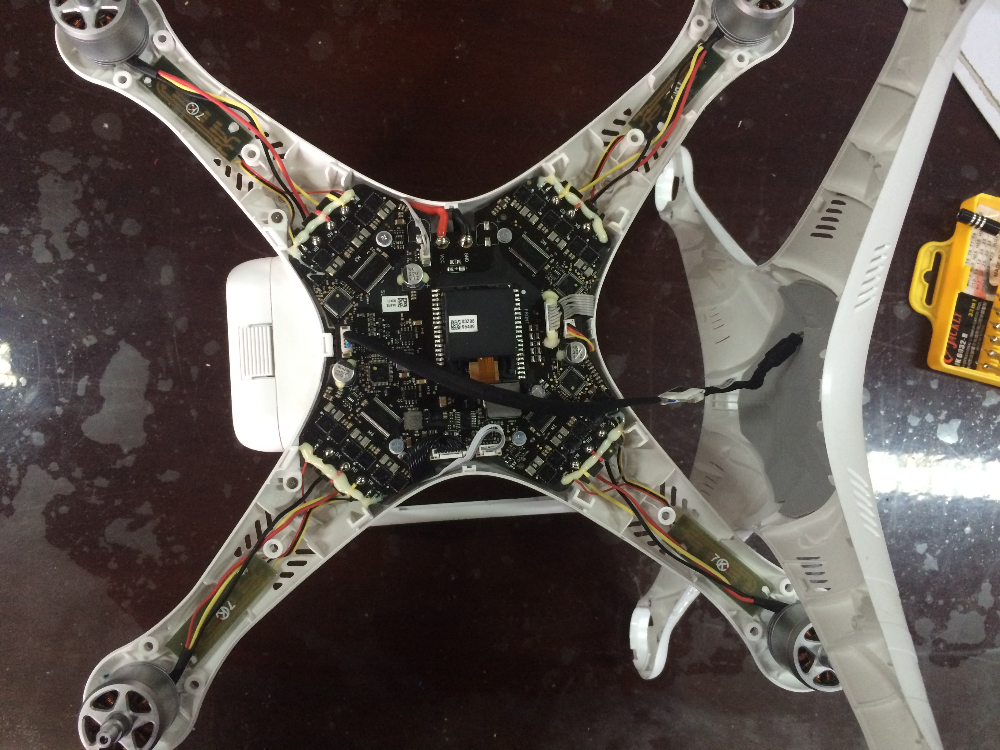

Research
These are my research projects. I'm now working in the Institute of Advanced Communications, advised by Prof. Lingyang Song.
3D Spectrum Map Building using Mobile Sensing
Yuzhe Yang, Chao Yao, Lingyang Song.
Time: Aug. 2016 - Dec. 2016


Above are images of our own built UAV.
We are doing research on UAV(Unmanned Aerial Vehicles)-aided communication. By adding several written modules , we aim to realize new applications under new scenarios of wireless communication. I assembled two UAVs with separated modules, adjusted their PID parameters by debugging motors’ outputs, and realized stable flying and loitering. Also, SITL on Linux was used to do UAV simulations.
The main method we use is that we divided whole room into several cubes, used the Sentinel cruise function to sense the Wi-Fi intensity of each cube and collected several sets of data timely. And we used each cube’s statistical mean of RSS as the merit to rebuild the 3D Wi-Fi Spectrum map of indoor circumstance.
We now try to use UAV, associated with Android phones, to sense the intensity of WiFi. Then we use the collected datas to build the 3D Wi-Fi Spectrum of indoor circumstance.
Fine-grained 3D Realtime AQI Monitoring by UAV
Yuzhe Yang, Zijie Zheng, Lingyang Song.
Time: Dec. 2016 - Jul. 2017 (Expected)
|  |
We used UAV-based sensors to study the distribution of AQI in specific and normal scenarios. A dynamic system is built consisting of an UAV and other sensors, and implemented real-time measurement.
Then we proposed a novel distribution model of AQI to realize the precisely prediction of AQI in a given fine-grained area. The model we use is mainly based on a physical model which can precisely reflect the movements of particles. We used the data we collected to train the models, and compared its accuracy with several existing models.
Then based on the proposed model, we design adaptive monitoring techniques for UAV realtime measurement, named as complete monitoring and optimized monitoring. Experimental results have shown our proposal can effectively reduce the power consumption of whole system.
Up to now, our work has been submitted to IEEE GLOBECOM and ACM Mobicom.
I'm now working on improving the model's estimation accuracy, by adding a non-linear part implemented by Neural Networks. Also, optimization problems are formed to choose optimal ways for UAV trajectory.